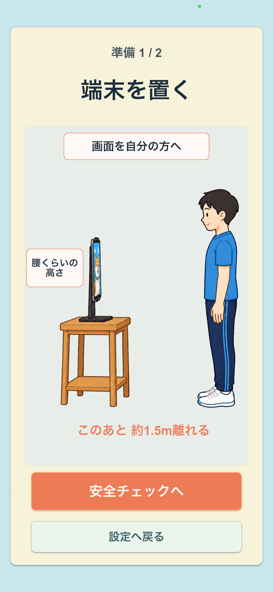
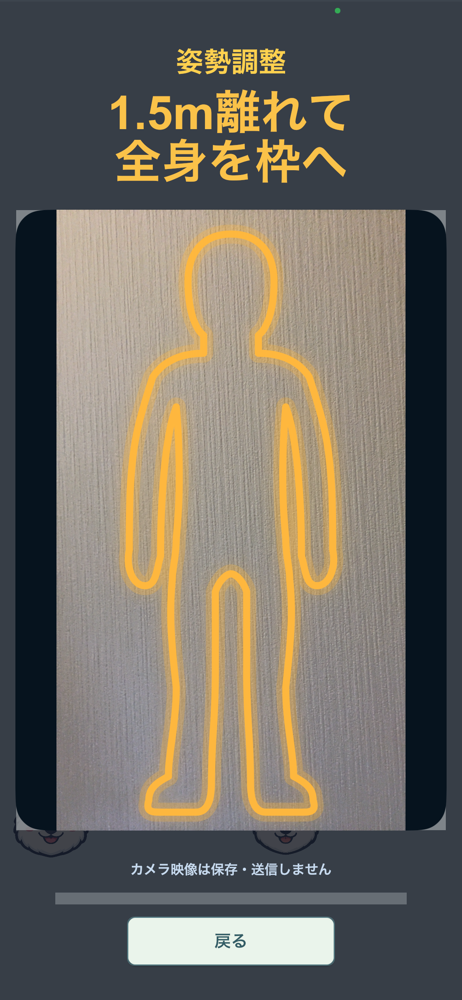

犬が一つ横へ移動
FIRST PLAY GUIDE
遊び方
最終更新日：2026年8月18日
選ぶ、整える、動かす。最初のプレイで必要なことを、3つの場面にまとめました。
SCENE 01
Levelと時間を選ぶ
最初はLevel 1と1分プレイがおすすめです。初回のみ、カメラの許可と利用状況データの送信について選びます。
- プレイ時間は1分から
- カメラに入るのはプレイヤー1人
- 利用状況データの送信は任意

SCENE 02
端末を置き、姿勢を整える
端末を腰くらいの高さの倒れにくい場所へ置き、周囲の安全を確認します。その後、約1.5m離れて全身を人型の枠へ合わせます。
- 左右と後方に動ける空間をつくる
- 画面を自分へ向ける
- 頭から足元まで映して正面に立つ


SCENE 03
一歩とスクワットで遊ぶ
犬が上から落ちてきたら、一歩でレーンを移動し、スクワットで素早く降下。同じ犬種へ合わせるとポイントです。
- 一歩ごとに犬が1レーン移動
- スクワットで犬が素早く降下
- 動いた後は中央の姿勢へ戻る


犬が素早く下へ進む
MORE DETAILS
認識と準備の詳細
初回のカメラ許可と利用状況データ
体の動きを読み取るため、初回の確認画面でカメラへのアクセスを許可します。
利用状況データの送信は任意です。「送信しない」を選んでもゲームを利用できます。
全身を認識しやすくするポイント
- 明るい場所で、強い逆光を避けます。
- 頭、両膝、足元までカメラに入れます。
- プレイヤー以外の人が認識範囲へ入らないようにします。
- 正面を向き、腕を自然に下ろして数秒静止します。
姿勢調整中のみカメラ映像を表示します。操作練習とゲーム中は表示しません。
安全に遊ぶために
- 左右と後方に、物や人へぶつからない空間を確保してください。
- 痛み、めまい、強い疲れ、体調不良があるときはプレイしないでください。
- 無理に深くしゃがんだり、大きく動いたりしないでください。
- お子さまが利用する場合は、保護者が端末の設置と周囲の安全を確認してください。
プライバシーについて
カメラ映像と身体の骨格座標は端末上でリアルタイムに処理し、保存・送信しません。
うまく認識されないときは
全身認識、ステップ、スクワット、カメラ許可を、症状別に確認できます。